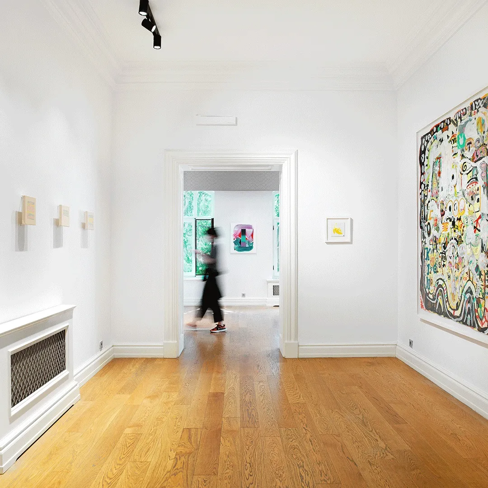

<!doctype html><html lang="tr"><meta charset="utf-8"><meta name="viewport" content="width=device-width,initial-scale=1"><title>ESRA GÜLMEN - Events | PILEVNELI</title><style>body{margin:0;background:#f6f5f1;color:#1d2327;font:16px/1.6 system-ui,sans-serif}main{max-width:1100px;margin:auto;padding:36px 28px}a{color:#244e8b}h1{font-size:32px;line-height:1.25}img{max-width:100%;height:auto}nav,.notice{padding:14px 20px;background:white;border:1px solid #ddd;border-radius:8px;margin:0 0 24px}nav{display:flex;gap:24px;flex-wrap:wrap}.records_list ul{list-style:none;padding:0;display:grid;grid-template-columns:repeat(auto-fit,minmax(260px,1fr));gap:24px}.records_list li{background:white;padding:16px}.image img{max-height:600px;object-fit:contain}.clear{clear:both}button,input,select{font:inherit;padding:9px 14px;border:1px solid #bbb;border-radius:6px}button{cursor:pointer;background:white}small{color:#667}table{width:100%;border-collapse:collapse}td,th{text-align:left;padding:10px;border-bottom:1px solid #ddd}.tag{font-size:12px;border-radius:5px;padding:3px 8px;background:#e5ebe5}pre{white-space:pre-wrap}</style><main><nav><a href="../arsiv.html">← Arşiv dizini</a><a href="https://web.archive.org/web/20211220115245/https://www.pilevneli.com/tr/artists/49-esra-gulmen/events/">Wayback kopyası</a><a href="../texts/cd7ebb4e6bf81f28.txt">Düz metin</a></nav><h1>ESRA GÜLMEN - Events | PILEVNELI</h1><div class="clearwithin" id="content">
<div class="subsection-events">
<div class="records_list feature_list grid_dynamic_layout_events collapse_single_column clearwithin">
<ul class="clearwithin">
<li class="" data-height="400" data-width="400">
<a href="d7a139a3fd82732a.html">
<span class="image"><span>

</span></span>
<span class="content">
<h2>ARTWEEKS @AKARETLER</h2>
<span class="subtitle"></span>
<span class="date">8 - 19 September 2021</span>
<div class="description">
<em><strong>Sanatçılar:</strong></em> <em>Çiğdem Aky</em> <em>Ali Elmacı</em> <em>Efsun Erkılıç</em> <em>Esra Gülmen</em> <em>Tim Kent</em> <em>Defne Tesal</em> <em>Tarık Töre</em> <em>Erdoğan Zümrütoğlu</em> <strong><em>Katkıda bulunanlar:</em></strong> <em>Mozaik</em>
</div>
<span class="link"><span>DAHA FAZLA</span></span>
</span>
</a>
</li>
</ul>
</div>
</div>
</div></main></html>